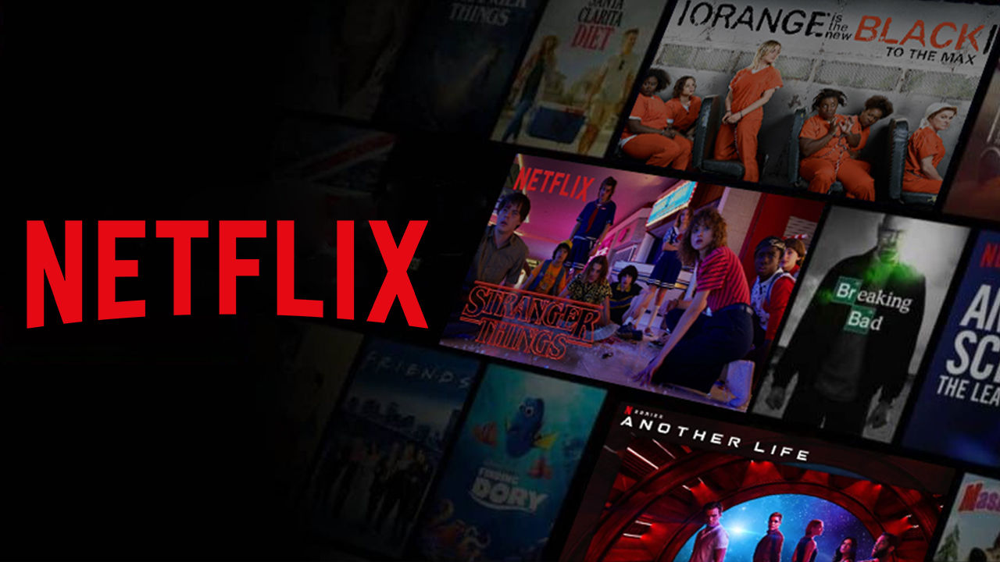

Valentina Gonzales



En esta pagina les mostrare más acerca de algunas de las series de Netflix popular4es como lo es Stranger Things (ST), que durante este año del 2025 se estrenara la Quinta y ultima temporada de la serie, que ya están anunciadas sus fechas de estreno de los capitulos. En el caso de Outer Banks, que es bastante contrario a la trama que maneja ST, se anunco que su ultima temporada seria en 2026, toavia Netflix no dio una fecha definitiva.